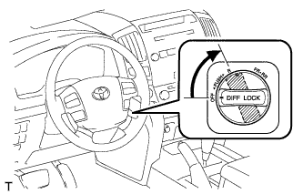
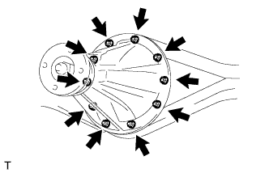

REAR DIFFERENTIAL CARRIER ASSEMBLY (w/ Differential Lock) > REMOVAL |
| 1. LOCK REAR DIFFERENTIAL |
Turn the engine switch on (IG).
Push on the 4WD switch.
 |
Turn the differential lock control switch to the RR position and lock the rear differential.
| 2. DRAIN DIFFERENTIAL OIL |
Stop the vehicle on a level place.
 |
for Front Differential:
Remove the engine under cover.
Using a 10 mm hexagon wrench, remove the filler plug and gasket.
Using a 10 mm hexagon wrench, remove the drain plug and gasket, and drain the oil.
Using a 10 mm hexagon wrench, install a new gasket and the drain plug.
for Rear Differential:
Remove the filler plug and gasket.
Remove the drain plug and gasket, and drain the oil.
Install a new gasket and the drain plug.
| 3. REMOVE REAR AXLE SHAFT |
Remove the axle shaft (Click here).
| 4. REMOVE DIFFERENTIAL PROTECTOR ASSEMBLY |
 |
Detach the 2 connector clamps and wire harness clamp.
Remove the bolt, nut and protector.
| 5. REMOVE REAR DIFFERENTIAL LOCK ACTUATOR PROTECTOR |
 |
Remove the 2 nuts and protector.
| 6. DISCONNECT REAR PROPELLER SHAFT ASSEMBLY |
 |
Place matchmarks on the rear propeller shaft and companion flange.
Remove the 4 nuts, 4 washers and 4 bolts, and disconnect the propeller shaft from the differential side.
Support the propeller shaft securely.
| 7. REMOVE REAR DIFFERENTIAL CARRIER ASSEMBLY |
 |
Disconnect the lock differential lock shift actuator and No. 4 transfer indicator switch connectors.
Disconnect the breather hose.
 |
Remove the 10 nuts, 10 washers and differential carrier assembly.
Remove the gasket.